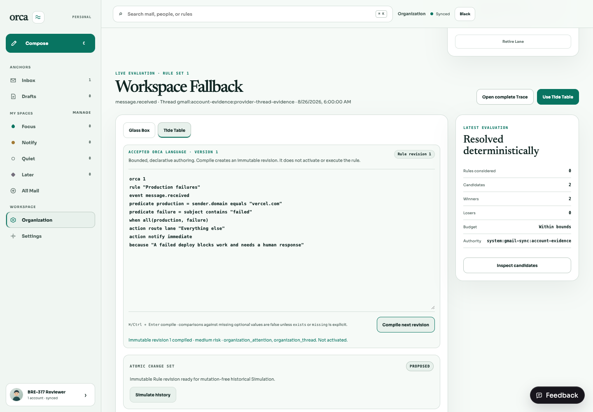
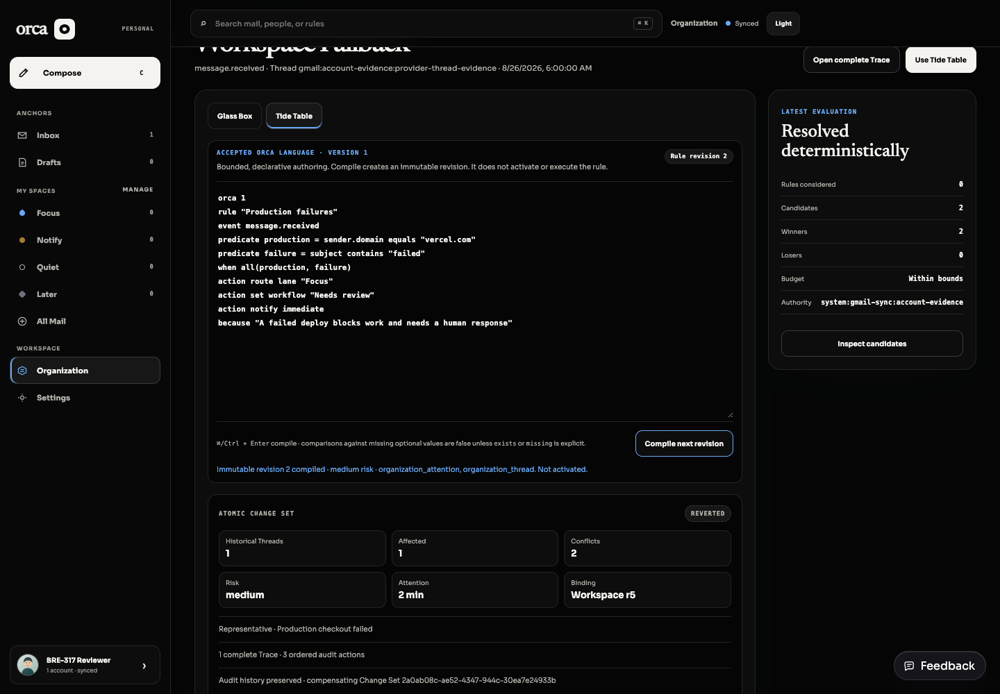
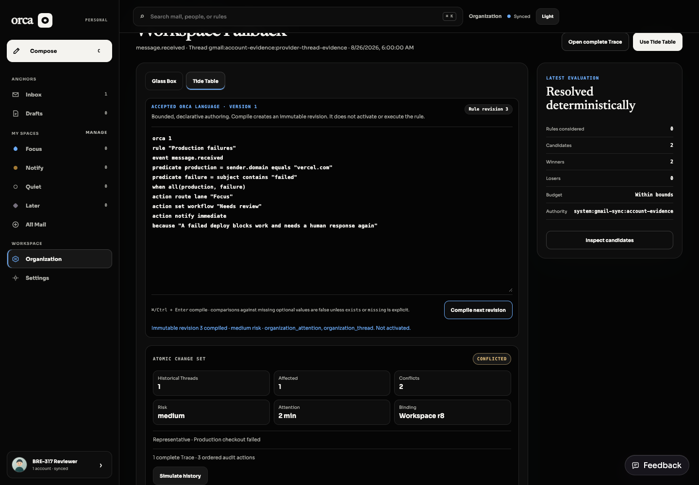

BRE-317 · reviewer handoff
Historical Simulation, atomic Change Sets, activation, and revert
One production semantics path now carries an immutable Rule revision from mutation-free historical analysis through authorized activation, complete explanation, and a compensating revert.
REVERIFY — independent gate fixes are implemented; fresh independent verification is still required. This guide is evidence, not self-certification.
State model
Architecture
orca-simulation.ts binds Rule revision, source digest, Workspace Schema/current revision, Rule Set revision, Accounts, and history bound.SQLite history adapter → production compiler rebind → production evaluator/conflict resolution → deterministic report digest. No mutation callback exists.
Authoritative G0 Capability lookup → transaction recheck → Rule/Lane/Facet/Workflow/Collection/Context/Thread projections + immutable Change Set/actions, or rollback all.
Security invariants
- The caller presents an immutable Capability claim, but never supplies the live side of the authority decision. Apply and revert resolve the exact current first-party Capability from persisted Workspace/Account ownership.
- Capability identity, revision, actor, audience, Workspace, Accounts, operation, resource families, action families, and risk scope are compared against that authoritative snapshot.
- The authoritative Capability is resolved again inside the SQLite transaction, closing preflight-to-commit revocation and replacement races.
- Every requested Account must be both owned and granted.
- Activation accepts only the exact successful Simulation digest for the same compiled Rule, Workspace, Rule Set, and history bound.
- Workspace, Rule, Rule Set, and affected Thread revisions are checked before and inside the transaction.
- Idempotency replay requires a canonical byte-equivalent request.
- Simulation asserts unchanged row counts and state; hostile apply/revert paths assert zero writes.
- Revert refuses newer state and returns resource-specific expected/actual revisions.
Production-failure walkthrough
- Compile the supplied “Production failures” Orca rule in Tide Table. Its winning projected actions route to “Focus” and set Workflow State “Needs review”; notification remains proposal-only evidence.
- Select Simulate history; inspect evaluated/affected counts, Lane and Workflow deltas, representative Thread, risk, conflicts, and attention estimate.
- Only a successful, current result enables Activate Change Set.
- Inspect the Change Set explanation: complete Trace, ordered actions, inverse evidence, and resulting revisions.
- Select Review revert, then apply the compensating revert. Confirm the original record is marked reverted and the compensation is appended.
- To review conflict behavior, mutate an affected Thread revision before revert; verify the exact conflict and zero projection/audit writes.
RED → GREEN evidence
| Slice | RED proof | GREEN proof |
|---|---|---|
| Shared contracts | Missing orca-simulation module. | 4/4 shared contract tests. |
| Production Simulation | Missing Simulation service; later exact Workspace revision mismatch and a missing source-digest rejection exposed binding/provenance semantics. | 3/3 semantic tests plus mutation-free SQLite test. |
| Atomic activation | Focused SQLite activation expectations failed before the Change Set service. | 3/3 SQLite Simulation/activation tests, including stale, denial, isolation, and injected rollback. |
| Capability trust blocker | attacker-self-asserted-capability, revision 999 activated successfully: AssertionError: Missing expected exception. | Forged, missing, revoked, stale, wrong actor/audience/Workspace/Account/operation/resource/action/risk variants deny with zero writes; apply and revert re-resolve authority inside the transaction. |
| Action completeness blocker | A winning set_workflow_state reported one affected Thread, but the authoritative Workflow projection remained absent. | Workflow, Collection, and Context winners now have ordered apply evidence, inverse state, Thread revision updates, replay, rollback, conflict, and compensating revert coverage. An exhaustive action-support map prevents evaluator/apply drift; unknown winners fail before writes. |
| Persisted inverse compatibility | A pre-fix Lane/Facet Change Set failed revert with invalid_change_set after the new evidence fields were introduced. | Absent Workflow/Collection/Context inverse fields retain legacy “not managed by this Change Set” semantics, so already-active pre-fix Change Sets remain revertible without disturbing those projections. |
| Compensating revert | service.revert is not a function (0 pass / 2 fail). | 2/2 revert tests: compensation/replay and newer-state conflict. |
| REST lifecycle | Unknown lifecycle route returned a non-JSON 404. | 1/1 authenticated simulate → apply → explain → revert. |
| Glass Box / Tide | No data-lifecycle-state="proposed" after compile. | 1/1 UI flow covers proposed, conflicted, simulated, active, and reverted. |
Exact verification commands and counts
CI=true bun test packages/shared/src/orca-simulation.test.ts \ apps/api/src/organization/rules/simulation.test.ts \ apps/api/src/organization/rules/simulation-sqlite.test.ts \ apps/api/src/organization/rules/routes.test.ts \ apps/web/src/desktop-switch.interaction.test.tsx \ apps/web/src/tide-table.test.tsx \ apps/web/src/organization-trace.test.tsx # 39 pass, 0 fail CI=true bun --filter @orca/shared test # 69 pass, 0 fail CI=true bun --filter @orca/web test # 161 pass, 0 fail CI=true bun --filter @orca/api test # 453 pass, 0 fail # Full total: 683 pass, 0 fail bun run typecheck bun run build bun run lint bun /tmp/bre317-migration-check.ts # journal order, fresh, 0031 upgrade, replay, integrity, FK, indexes: PASS git diff --check
Authenticated production-adapter evidence





These are not interactive-preview fixtures. They were captured headlessly from the real authenticated REST/UI lifecycle against an isolated SQLite database created by the production migration runner and seeded with a representative Gmail row. No external Gmail request was needed. /opt/homebrew/bin/agent-browser loaded its full core skill; the browser, API, and Vite sessions were closed after capture.
Reviewer decision points
- Confirm the representative Thread cap of 20 and activation history bound of 5,000 are appropriate for first release.
- Residual risk: historical evaluation currently uses the latest persisted message per Thread, bounded by received time; it does not replay every message event in a Thread.
- Residual verification status: the two independent blockers and the evidence-claim blocker are fixed locally, but the status remains REVERIFY until the independent verifier reruns at the new commit.